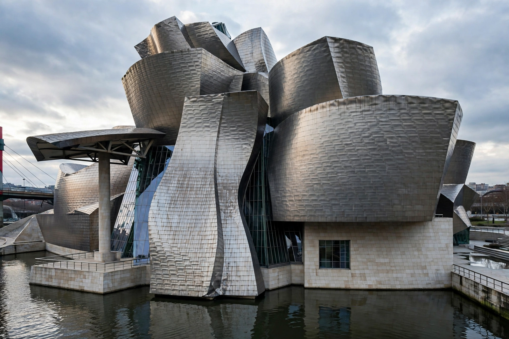

Deconstructivism
From Wikipedia, the free encyclopedia

Deconstructivism is a movement in postmodern architecture that emerged in the late 1980s, characterised by fragmentation, non-rectilinear forms, distorted geometry and a controlled chaos that rejects the harmony and continuity of modernism. Its name and concepts play on Jacques Derrida's philosophical Deconstruction and on Russian Constructivism.
The 1988 exhibition
The movement was named by the Museum of Modern Art exhibition 'Deconstructivist Architecture' (1988), curated by Philip Johnson and Mark Wigley, which grouped seven architects: Frank Gehry, Daniel Libeskind, Rem Koolhaas, Peter Eisenman, Zaha Hadid, Coop Himmelb(l)au and Bernard Tschumi. Their projects displaced and warped structural grids, taking inspiration from Derrida (with whom Eisenman collaborated) and from the tilted, colliding forms of the 1920s Russian avant-garde.
Major works
Signature buildings include Gehry's Guggenheim Museum Bilbao (1997), whose titanium curves helped coin the 'Bilbao effect' of architecture-led urban regeneration; Hadid's Vitra Fire Station (1993) and MAXXI museum in Rome (2009); Libeskind's Jewish Museum, Berlin (2001); Koolhaas's Seattle Central Library (2004); and Tschumi's Parc de la Villette follies (1987). Computer-aided design made such geometries buildable at scale.
Criticism
Detractors call deconstructivism arbitrary formalism — 'style over substance' — indifferent to context, users and sustainability, and note that several of its stars disowned the label from the start. Its legacy persists in parametric design and the sculptural landmark museums of the 2000s.